Die Artikelbedarfsvorschau zeigt den voraussichtlichen Artikelbedarf (sogenannte "Dispositionen") für ein Produkt zu einem bestimmten Zeitpunkt an, wobei selektiv ausgewählt werden kann, welche Einflussfaktoren auf diesen Artikelbedarf wirken sollen.
Der Aufruf der Bedarfsvorschau kann hierbei in jedem Feld, in welchem die Artikelnummer eingegeben werden kann, über das Kontextmenü der rechten Maustaste (Funktion "Bedarfsvorschau") erfolgen (z.B. in der Belegerfassung, dem Artikelstamm, etc.).

Das Fenster ist in die folgenden Register unterteilt:
ü Register "Detailansicht"
(aktuelles Register)
In diesem Register werden die Dispositionszeilen in Form
einer Tabelle dargestellt.
ü Register "Bedarfsübersicht"
In
diesem Register werden die Dispositionszeilen in Form eines Zeitstrahls
aufbereitet.
ü Register "Grafik"
In diesem
Register werden die Dispositionszeilen in Form einer Grafik dargestellt.
ü Register "Optionen"
In diesem
Register können Einstellungen für die Darstellung der Artikelbedarfsvorschau
getroffen werden.
ü Register "Ausprägungen"
Handelt es
sich bei dem Artikel um einen Hauptartikel mit Ausprägungen, dann werden in
diesem Register Detailinformationen über die Ausprägungen angezeigt.
Register "Detailansicht"
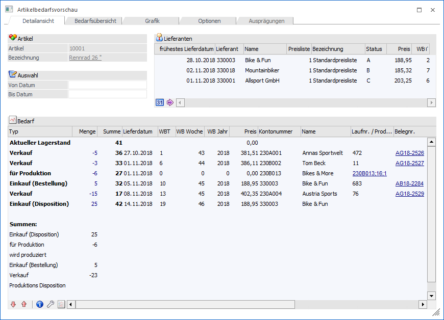
Artikel
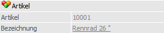
Ø Artikel
An dieser Stelle wird die Artikelnummer des Produktes angezeigt, welches aktuell in der Bedarfsvorschau betrachtet wird.
Hinweis
Die Bedarfsvorschau wird standardmäßig für den Artikel geöffnet, auf welchem beim Aufruf der Fokus lag. Eine Änderung des Artikels ist im Register "Optionen" möglich.
Ø Bezeichnung
In diesem Feld wird die Artikelbezeichnung des Produktes angezeigt, welches aktuell in der Bedarfsvorschau betrachtet wird.
Auswahl
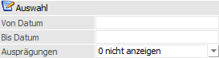
Ø Von Datum/Bis Datum
In diesen Feldern kann die Eingrenzung auf einen bestimmten Zeitraum erfolgen, für welchen der Artikelbedarf errechnet werden soll.
Hinweis
Die Beeinflussung der Einflussfaktoren (welche Art von Bewegungen für die Berechnung herangezogen werden sollen) erfolgt im Register "Optionen".
Ø Ausprägungen
Bei Hauptartikeln mit Ausprägungen kann an dieser Stelle definiert werden, ob die Dispositionszeilen der einzelnen Ausprägungen mit angezeigt werden sollen oder nicht (nähere Informationen siehe Kapitel Artikelbedarfsvorschau - Hauptartikel mit Ausprägungen). Hierfür stehen die folgenden Einstellungen zur Verfügung, wobei die gewählte Einstellung benutzerspezifisch gespeichert wird:
ü 0 - nicht anzeigen
ü 1 - anzeigen
Tabelle "Lieferanten"
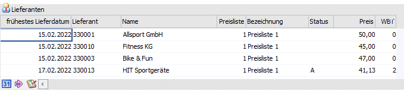
In dieser Tabelle werden die beim Artikel hinterlegten Lieferanten angezeigt.
Ø frühestes Lieferdatum
Aufgrund der Wiederbeschaffungstage, welche pro Lieferant hinterlegt werden können, wird das früheste Lieferdatum berechnet und angezeigt.
Ø Lieferant
In dieser Spalte wird die Lieferantennummer dargestellt.
Ø Name
An dieser Stelle wird der Name des Lieferanten angezeigt.
Ø Preisliste
Hier wird die Preisliste des Lieferanten-Eintrags dargestellt.
Ø Bezeichnung
An dieser Stelle wird die Bezeichnung der Preisliste angezeigt.
Ø Status
An dieser Stelle wird der Lieferanten-Status ausgewiesen.
Ø Preis
In der Spalte "Preis" wird der Einkaufspreis beim Lieferanten angezeigt.
Ø WBT
An dieser Stelle werden die standardmäßigen Wiederbeschaffungstage angezeigt.
Ø Optionale Spalten
Neben den Standard-Spalten können über das Kontextmenü der rechten Maustaste (Funktion "Spalten anzeigen / verstecken") jederzeit folgende Spalten hinzugefügt bzw. entfernt werden:
ü Provisionscode
ü Lief.Art.Nr.
ü Lief.Art.Bez.
ü Notiz
ü Datum von
ü Datum bis
ü Rabatt 1
ü Rabatt 2
ü Ab Menge
ü Kontraktnummer
ü Losgröße
ü FW
ü Colli
Tabelle "Lieferanten" – Tabellenbuttons
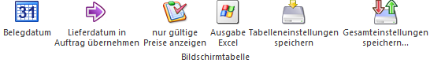
Ø Belegdatum
Wurde die Artikelbedarfsvorschau über die Belegerfassung im Zuge der Prüfung der Verfügbaren Menge geöffnet (Belegstufe "Auftrag" und Belegart mit Verfügbarkeitswarnung oder Sperre), eine nicht verfügbare Menge eingegeben und ist ein abweichendes Lieferdatum (zum aktuellen Tagesdatum) hinterlegt, so steht der Button "Belegdatum" zur Verfügung. Durch Anwahl des Buttons wird die Gültigkeit der Preise auch anhand des Belegdatums geprüft. Als das früheste Lieferdatum wird das Lieferdatum aus dem Beleg angezeigt / berechnet und in weiterer Folge mit diesem Datum eine Bestellzeile (Typ "Einkauf (Disposition)") gebildet.
Ø Datum übernehmen
Wurde die Artikelbedarfsvorschau über die Belegerfassung im Zuge der Prüfung der Verfügbaren Menge geöffnet (Belegstufe "Auftrag"), so steht der Button "Datum übernehmen" zur Verfügung.
Steht der Cursor auf einen Lieferanten wird beim Drücken dieses Buttons das früheste Lieferdatum des Lieferanten (aufgrund der WBT) in den Auftrag übernommen und zusätzlich eine Bestellzeile (Typ "Einkauf (Disposition)") gebildet. Diese Dispo-Zeile kann nachfolgend im "Bestellvorschlag bearbeiten" editiert oder über "Lieferantenbelege erstellen" in eine Bestellung umgewandelt werden.
Ø nur gültige Preise anzeigen
Bei Anwahl dieses Buttons werden nur jene Lieferantenpreise angezeigt, welche zum Tagesdatum gültig sind. Diese Einstellung wird benutzerspezifisch gespeichert.
Hinweis
Steht der Tabellenbutton "Belegdatum" zur Verfügung und wurde dieser ausgewählt, so erfolgt die Prüfung anhand des Lieferdatums der Belegzeile.
Ø Ausgabe Excel
Durch Anwahl des Buttons "Ausgabe Excel" wird der Inhalt der Tabelle an Microsoft Excel übergeben.
Ø Tabelleneinstellungen speichern
Die Spalten einer Tabelle können grundsätzlich an beliebige Positionen verschoben, bzw. in der Breite entsprechend angepasst werden. Durch Anwahl des Buttons "Tabelleneinstellungen speichern" werden die Einstellungen benutzerspezifisch gespeichert und bei dem nächsten Aufruf des Programmpunktes wieder vorgeschlagen.
Ø Gesamteinstellungen speichern
Im Gegensatz zu "Tabelleneinstellungen speichern" können mit "Gesamteinstellungen speichern" mehrere Tabellenaufbauten gespeichert und nach Wunsch geladen werden. Zusätzlich werden Sonderfunktionen der Tabelle (z.B. "Spalte gruppieren") ebenfalls bei der Speicherung bedacht.
Tabelle "Bedarf"
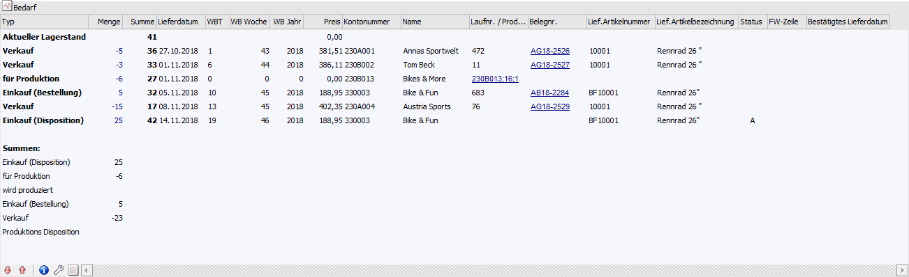
In der Tabelle werden alle Bedarfszeilen (Dispositionen) des jeweiligen Artikels aufgelistet.
Hinweis
Die Beeinflussung der Einflussfaktoren (welche Art von Dispositionen herangezogen werden sollen) erfolgt im Register "Optionen".
Ø Typ
In der Spalte "Typ" wird die Art der Disposition ausgewiesen. Folgende Varianten sind hierbei möglich:
ü Aktueller Lagerstand
In dieser
Zeile wird der aktuelle Lagerstand (unabhängig von dem gewählten Zeitraum)
dargestellt (Spalte "Summe").
ü voraussichtliche kumulierte
Menge
Wenn nur ein bestimmter Zeitraum betrachtet werden soll (siehe Felder
"Von Datum / Bis Datum"), dann werden die Mengen der ausgegrenzten
Dispositionszeilen in dieser Zeile kumuliert dargestellt (Spalte "Menge")
aufgeführt.
ü Einkauf (Disposition)
Bei
Dispositions-Zeilen dieses Typs handelt es sich um Bedarfszeilen, bei denen eine
Bestellung geplant, aber noch durchgeführt wurde. Solche Zeilen können wie folgt
erzeugt werden:
ü Automatischer Bestellvorschlag
ü Erfassung eines Auftrags mit Artikeln des Reservierungstyps "1 - Auftragsbezogenen Produktion / Bestellung)
Achtung
In der Belegart muss die Option "Auftragsbezogene Produktion/Bestellung" aktiviert sein.
ü Anwahl des Tabellenbuttons "Datum übernehmen" (Tabelle "Lieferanten")
ü Einkauf (Bestellung)
Sobald
eine Lieferantenbestellung (Belegstufe "6 - L.Bestellung") gedruckt bzw.
gerechnet wurde - und in der Belegart die Option "Bestellbestand verändern"
aktiviert ist - wird die Belegzeile in der Artikelbedarfstabelle aufgeführt.
ü Verkauf
Sobald eine
Kundenauftragsbestätigung (Belegstufe "2 - Auftrag") gedruckt bzw. gerechnet
wurde - und in der Belegart die Option "Bestellbestand verändern" aktiviert ist
- wird die Belegzeile in der Artikelbedarfstabelle aufgeführt.
ü für Produktion
Artikel können
nicht durch direkt Verkauf, sondern auch für die Herstellung von
Produktionsartikel oder Handelsstücklisten benötigt werden. In solch einen Fall
spricht man von einer sogenannten Komponente.
Wird ein Produktionsauftrag in
der WinLine PPS erzeugt oder ein Auftrag mit einer Handelsstückliste / einem
Produktionsartikel in der WinLine FAKT angelegt, so wird der Bedarf an dem
Artikel (d.h. der Komponente) mit Hilfe solch einer Dispositionszeilen
angezeigt.
Achtung
Werden die Handelsstückliste bzw. der Produktionsartikel "vom Lager" genommen, so wird keine "für Produktion"-Zeile erzeugt.
ü Produktions Disposition
Bei
Dispositions-Zeilen dieses Typs handelt es sich um Bedarfszeilen, bei denen ein
Produktionsauftrag geplant, aber noch eingelastet wurde. Solche Zeilen können
wie folgt erzeugt werden:
ü Automatischer Bestellvorschlag
ü Erfassung eines Auftrags mit Produktionsartikeln des Reservierungstyps "1 - Auftragsbezogenen Produktion / Bestellung" und der Option "Stücklistenfenster nicht öffnen"
Achtung
In der Belegart muss die Option "Auftragsbezogene Produktion/Bestellung" aktiviert sein.
ü wird produziert
Sobald für
einen Produktionsartikel ein Auftrag im Modul WinLine PPS eingeplant wurde, so
wird für diesen Artikel eine Dispositionszeile des Typs "wird produziert"
erzeugt.
Handelt es sich bei dem Artikel um eine Handelsstückliste und es
wird für diese ein Auftrag erzeugt, so wird ebenfalls eine "wird
produziert"-Zeile generiert.
Achtung
Werden die Handelsstückliste bzw. der Produktionsartikel "vom Lager" genommen, so wird keine "wird produziert"-Zeile erzeugt.
ü nicht verfügbarer Bestand
Wird
der Artikeln mit Lagerorten des Lagermanagements geführt, so wird hier jener
Bestand angezeigt und abgezogen, welcher sich auf nicht verfügbaren Lagerorten
befindet.
ü Menge kommissioniert (Info)
Ist
bei einem Artikel eine kommissionierte Menge vorhanden, so wird diese unterhalb
des aktuellen Lagerstands angezeigt, jedoch nur temporär in der Summierung
berücksichtigt. Zusätzlich wird bei den Auftragszeilen in der Spalte "Status"
ein Symbol für die Kommissionierung angezeigt, unabhängig davon, ob für den
Auftrag bereits eine Packliste im Originaldruck gedruckt wurde.
Beispiel
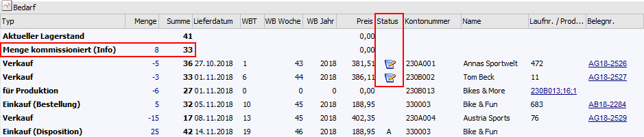
ü Umbuchungsanforderung
Wenn der
Bestellvorschlag für ein anderes Lager als das bedarfsführende Lager erzeugt
wurde, dann wird automatisch eine Zeile "Umbuchungsanforderung" mit der gleichen
Menge wie die Einkaufsdisposition erzeugt. Anhand dieser Informationen kann
später die Lagerumbuchung, z.B. vom Wareneingangslager auf das
Fremdfertigerlager, im Fenster "Lagerumbuchung" bzw. "Lagerorte bearbeiten"
automatisch durchgeführt werden.
Beispiel
Eine Komponente wird von einem
Fremdfertiger (Lager "ALL") benötigt, soll bei diesem aber für das eigene
Wareneingangslager (Lager "WE") bestellt werden. Es wurden 2 Produktionsaufträge
angelegt und die Komponente wird insgesamt 50x benötigt. Anschließend wurde ein
automatischer Bestellvorschlag ausgeführt, damit die Bestellung beim
Fremdfertiger "geplant" wird.
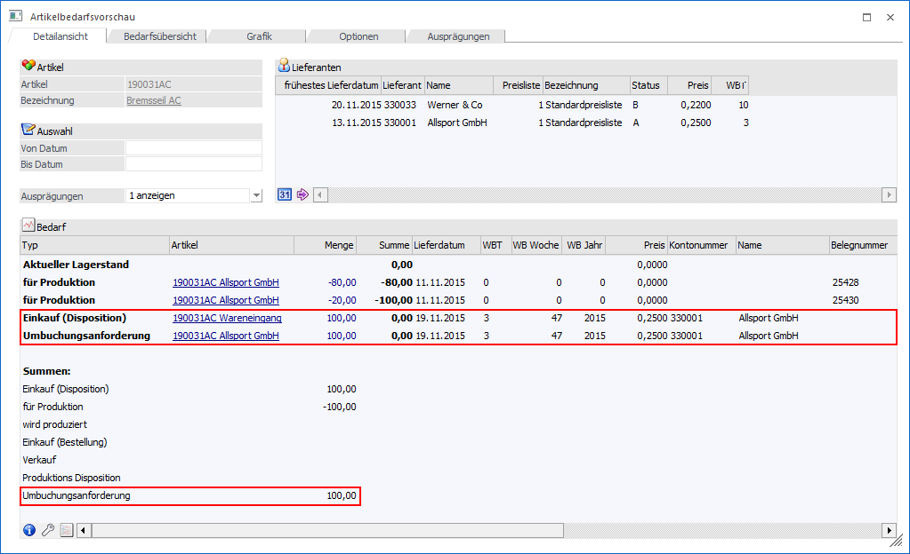
ü Lagerumbuchung
(Disposition)
Bei dem Druck des Lieferantenlieferscheins für eine Bestellung
mit Verweisartikel (siehe Typ "Umbuchungsanforderung") entstehen automatisch
zwei neue Lagerumbuchungszeilen vom Typ "Lagerumbuchung (Disposition)". Eine
Zeile wird für den Artikel mit Bedarf (der Verweisartikel) als Zugang (+)
gebildet und eine Zeile für den bestellten Einkaufsartikel als Abgang
(-).
Diese Zeilen werden nicht in der Summe mitgerechnet, wenn die
Bedarfsvorschau des Hauptartikels ausgegeben wird. Unterhalb der Tabelle wird
eine Gesamtsumme "Lagerumbuchung" angedruckt, sobald Zeilen vorhanden sind und
die Summe ungleich 0 ist
Beispiel
Nach dem Lieferscheindruck für
100 Stück von Artikel "190031AC,WE" (Lieferung auf Wareneingangslager) sind in
der Artikelbedarfsvorschau zwei Lagerumbuchungszeilen fürs das Lager "Allsport
GmbH" (Verweisartikel - Artikel "190031AC,ALL") und fürs Lager "Wareneingang"
(Artikel "190031AC,WE") mit einer Menge von jeweils 50 Stück
vorhanden
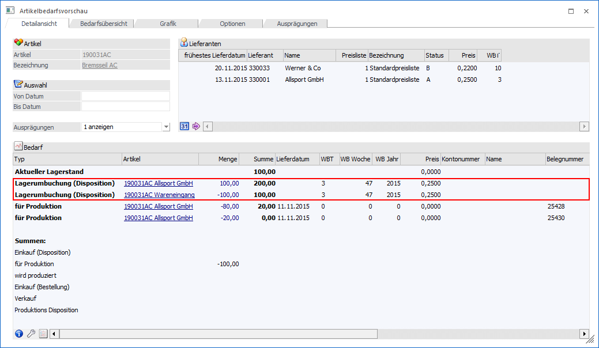
Achtung
Wenn der Verweisartikel (z.B. ein Artikel, welcher das Fremdfertigerlager darstellt) vom Typ "Bestellung mit Reservierung" ist, so wird die Artikelreservierung bis zum Druck des Lieferantenlieferscheines normal berücksichtigt. Da beim Druck des Lieferantenlieferscheins die Menge ja nicht auf das Lager des Artikels mit Bedarf gebucht wird, werden allerdings auch keine entsprechenden Lagerreservierungszeilen geschrieben. In der Folge werden dann die Lagerumbuchungszeilen nicht mehr für den auslösenden Kundenauftrag bzw. den Produktionsauftrag reserviert.
Ø Artikel
Handelt es sich um einen Hauptartikel mit Ausprägungen und ist die Ausprägungsanzeige (siehe Option "Ausprägungen") aktiviert, so wird an dieser Stelle die Artikelnummer des Haupt- bzw. Ausprägungsartikels angezeigt, welcher die Dispositionszeile ausgelöst hat.
Ø Menge
In dieser Spalte wird die Menge der jeweiligen Bedarfszeile ausgewiesen.
Ø Res.
Handelt es sich um einen Artikel mit Reservierungen und wird gemäß FAKT-Parametern mit Reservierungen gearbeitet, dann wird in dieser Spalte die jeweilige reservierte Menge angezeigt (nähere Informationen siehe Kapitel Artikelbedarfsvorschau - Reservierungen).
Ø Summe
In der Spalte "Summe" wird die voraussichtliche Menge kumuliert dargestellt.
Ø Reservierungszuordnung
Mit Hilfe von Icons werden die logischen Zusammenhänge von Reservierungszeilen dargestellt (die Spalte wird automatisch dargestellt, wenn der Artikel auf Reservierung geschlüsselt wurde).
ü - Bedarf
Es handelt sich um
Reservierungszeilen, welche einen Bedarf erzeugen.
ü - Herkunft
Es handelt sich um
Reservierungszeilen, welche einen Bedarf decken.
Ø Produktionszeile
Diese Spalte wird automatisch angezeigt, wenn die Bedarfsvorschau einer Komponente aus einem der folgenden Menüpunkte aufgerufen wird:
ü Produktionskorrektur
ü Produktionsendmeldung
ü Verfügbarkeitsliste/Bedarf
In der Spalte wird, bei Dispositionszeilen des Typs "für Produktion", mit Hilfe eines Icons die Bedarfszeile gekennzeichnet, welche in Verbindung mit dem aktuellen Produktionsauftrag steht.
Beispiel
Für den Artikel "19000" (Fahrrad - Rahmen) wird aus der Tabelle der Produktionsendmeldung (Schritt 2) die Bedarfsvorschau aufgerufen. In der Tabelle der Bedarfsvorschau wird diese Zeile mit dem Symbol des blauen Pfeils gekennzeichnet.
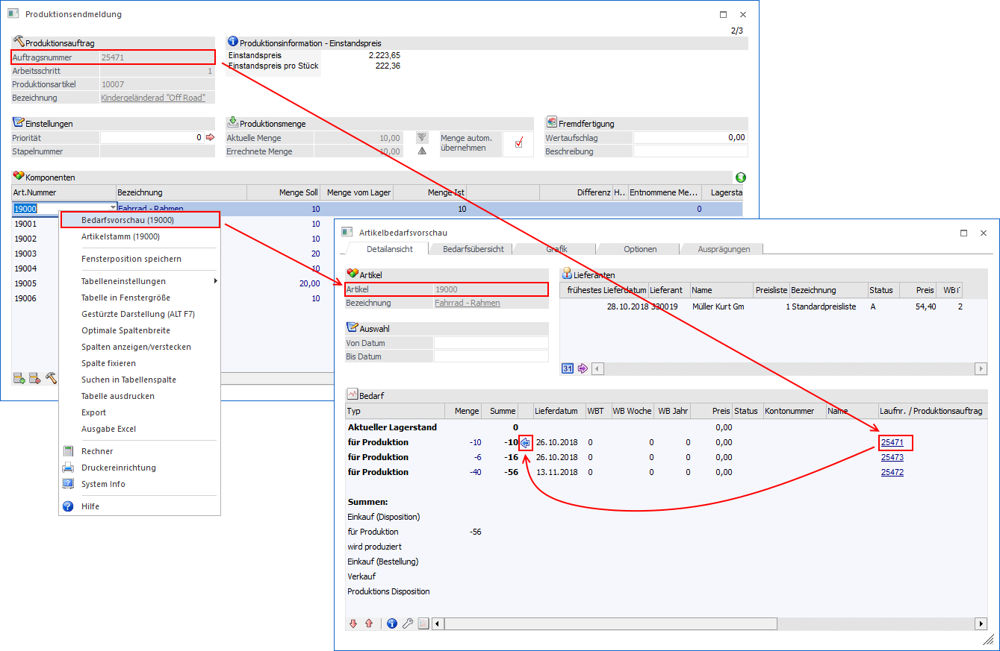
Ø Lieferdatum
Dieses Datum zeigt an, wann die Bedarfszeile (lt. Beleg / Produktionsauftrag) zum Tragen kommt. D.h. wann Ware z.B. geliefert werden müsste oder angeliefert werden sollte.
Ø WBT / WB Woche / WB Jahr
In diesen Spalten wird bei Dispositionszeilen der Typen "Einkauf (Disposition)", "Einkauf (Bestellt)" bzw. "Verkauf" die originale Zeitspanne zwischen Belegdatum und Lieferdatum ausgewiesen.
Ø Preis
An dieser Stelle wird bei Dispositionszeilen der Typen "Einkauf (Disposition)", "Einkauf (Bestellt)" oder "Verkauf" der Einkaufs- bzw. Verkaufspreis der zugrundeliegenden Belegzeile ausgewiesen.
Ø Kontonummer
In dieser Spalte wird die Kontonummer des zugrundeliegenden Belegs angezeigt.
Hinweis
Handelt es sich um eine Produktions-Disposition, wobei der Produktionsauftrag mit Hilfe des automatischen Bestellvorschlags (Register "Prod.artikel produzieren") erzeugt wurde, so wird an dieser Stelle "+PROD" angezeigt.
Ø Name
An dieser Stelle wird der Name des Kontos angezeigt.
Ø Laufnr./Produktionsauftrag
In Abhängigkeit des Dispositionstyps werden hier folgende Informationen ausgewiesen:
ü Verkauf / Einkauf
(Bestellung)
Es wird die Laufnummer des zugrunde liegenden Belegs
angezeigt.
ü wird produziert
Handelt es sich
um einen Produktionsartikel, so wird die Nummer des Produktionsauftrags
angezeigt. Bei einer Handelsstückliste wird der sogenannte Stücklistenkey
(Kontonummer;Laufnummer; fortlaufende Nummer) ausgewiesen.
ü für Produktion
Handelt es sich
um eine Komponente eines Produktionsartikels, so wird die Nummer des
Produktionsauftrags angezeigt. Bei der Komponente einer Handelsstückliste wird
der sogenannte Stücklistenkey (Kontonummer;Laufnummer; fortlaufende Nummer)
ausgewiesen.
Ø Belegnr.
An dieser Stelle wird bei Dispositionszeilen der Typen "Einkauf (Bestellt)" oder "Verkauf" die Belegnummer des zugrunde liegenden Belegs ausgewiesen.
Ø Lief.Artikelnummer / Lief.Artikelbezeichnung
In diesen Spalten wird bei Dispositionszeilen der Typen "Einkauf (Disposition)", "Einkauf (Bestellt)" oder "Verkauf" die Ersatzartikelnummer bzw. -bezeichnung der zugrunde liegenden Belegzeile ausgewiesen.
Ø Status
In Abhängigkeit vom Dispositionstyp werden hier folgende Informationen ausgewiesen:
ü Einkauf (Disposition)
Es wird
der Status des zugrunde liegenden Lieferanten angezeigt.
ü Verkauf
Wurde eine
Kommissionierung für den Auftrag durchgeführt, so wird ein Symbol für die
Kommissionierung angezeigt.
Beispiel
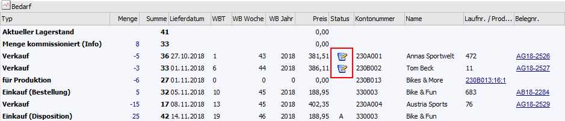
Ø FW-Zeile
Handelt es sich um einen Beleg, welcher in einer Fremdwährung erfasst wurde, so wird an dieser Stelle die entsprechende Fremdwährung angezeigt.
Ø Bestätigtes Lieferdatum (Bezeichnungen lt. Einstellung in den Belegoptionen)
Wurde für die zugrunde liegende Belegzeile ein Lieferdatum 2 hinterlegt, so wird dieses hier ausgewiesen.
Tabelle "Bedarf" - Tabellenbuttons
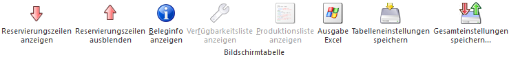
Ø Reservierungszeilen anzeigen / Reservierungszeilen ausblenden
Bei Artikeln mit Reservierungskennzeichen mit Hilfe dieser Tabellenbuttons definiert werden, wie detailliert die Informationen in der Tabelle "Bedarf" ausgewiesen werden sollen (nähere Informationen siehe Kapitel Artikelbedarfsvorschau - Reservierungen).
Hinweis
Die gewählte Einstellung wird pro benutzerspezifisch gespeichert.
Ø Beleginfo anzeigen
Bei Bedarfszeilen der Typen "Einkauf (Bestellt)" bzw. "Verkauf" kann durch Anwahl des Buttons der zugrunde liegende Beleg in Form einer Vorschau betrachtet werden.
Ø Verfügbarkeitsliste anzeigen
Bei Dispositionszeilen des Typs "wird produziert" kann durch Anwahl des Buttons die Verfügbarkeitsliste des betroffenen Produktionsauftrags geöffnet werden.
Ø Produktionsliste anzeigen
Bei Bedarfszeilen des Typs "wird produziert" bzw. "für Produktion" kann durch Anwahl des Buttons die jeweilige Produktionsliste am Bildschirm ausgegeben werden.
Ø Ausgabe Excel
Durch Anwahl des Buttons "Ausgabe Excel" wird der Inhalt der Tabelle an Microsoft Excel übergeben.
Ø Tabelleneinstellungen speichern
Die Spalten einer Tabelle können grundsätzlich an beliebige Positionen verschoben, bzw. in der Breite entsprechend angepasst werden. Durch Anwahl des Buttons "Tabelleneinstellungen speichern" werden die Einstellungen benutzerspezifisch gespeichert und bei dem nächsten Aufruf des Programmpunktes wieder vorgeschlagen.
Ø Gesamteinstellungen speichern
Im Gegensatz zu "Tabelleneinstellungen speichern" können mit "Gesamteinstellungen speichern" mehrere Tabellenaufbauten gespeichert und nach Wunsch geladen werden. Zusätzlich werden Sonderfunktionen der Tabelle (z.B. "Spalte gruppieren") ebenfalls bei der Speicherung bedacht.
Buttons
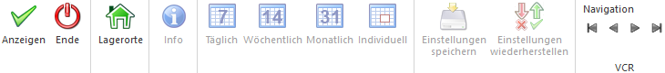
Ø Anzeigen
Durch Anwahl des Buttons "Anzeigen" bzw. der Taste F5 wird die Anzeige der Bedarfsvorschau, gemäß der aktuell gewählten Einstellungen, aktualisiert.
Ø Ende
Durch Anklicken des Buttons "Ende" bzw. der Taste ESC wird das Fenster geschlossen.
Ø Lagerorte
Bei Anwahl des Buttons "Lagerorte" wird das Programm "Artikel - Lagerorte" aufgerufen und die aktuellen Lagerorte des Artikels dargestellt.
Ø Info (nur im Register "Bedarfsübersicht" und "Grafik")
Durch Anwahl des Buttons "Info" wird die aktuelle Zeitschiene in Form einer Grafik am Bildschirm ausgegeben.
Ø Täglich / Wöchentlich / Monatlich / Individuell (nur im Register "Bedarfsübersicht" und "Grafik")
Durch Anwahl der Buttons kann der Zeitintervall für die Anzeige geändert werden.
Ø Einstellungen speichern (nur im Register "Optionen")
Mit Hilfe des Buttons "Einstellungen speichern" werden die vorgenommenen Einstellungen benutzerspezifisch gespeichert.
Ø Einstellungen wiederherstellen (nur im Register "Optionen")
Durch Anwahl des Buttons werden die zuletzt gespeicherten Einstellungen geladen.
Ø VCR-Buttons
Über die so genannten VCR-Buttons, welche in jedem Register zur Verfügung stehen, kann durch Mausklick zwischen den Datensätzen geblättert werden.
ü  Damit kann der
erste Datensatz angesprochen werden.
Damit kann der
erste Datensatz angesprochen werden.
ü  Damit kann der
vorherige Datensatz angesprochen werden.
Damit kann der
vorherige Datensatz angesprochen werden.
ü  Damit kann der
nächste Datensatz angesprochen werden.
Damit kann der
nächste Datensatz angesprochen werden.
ü  Damit kann der
letzte Datensatz angesprochen werden.
Damit kann der
letzte Datensatz angesprochen werden.
Hinweis
Beim Blättern zwischen den Artikel-Datensätzen werden Ausprägungen standardmäßig "überblättert", d.h. es wird von einem Hauptartikel zum nächsten geblättert. Sollten auch Ausprägungen berücksichtigt werden, so muss beim Blättern zusätzlich die STRG-Taste gedrückt werden.